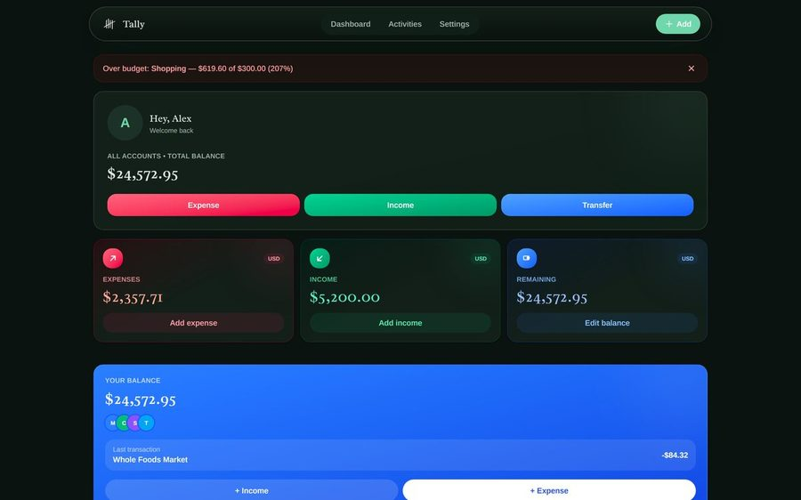
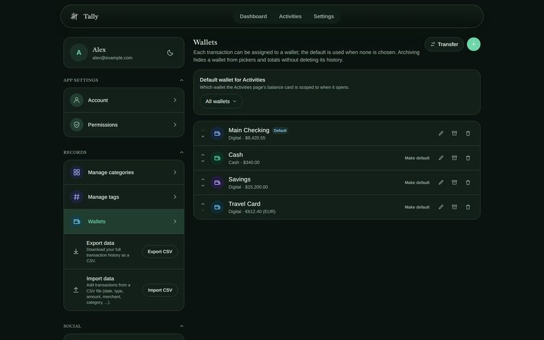
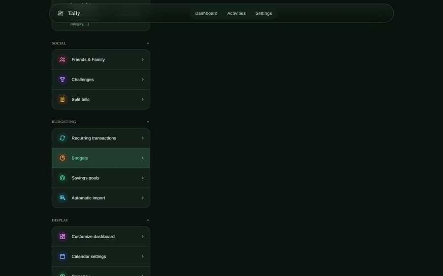
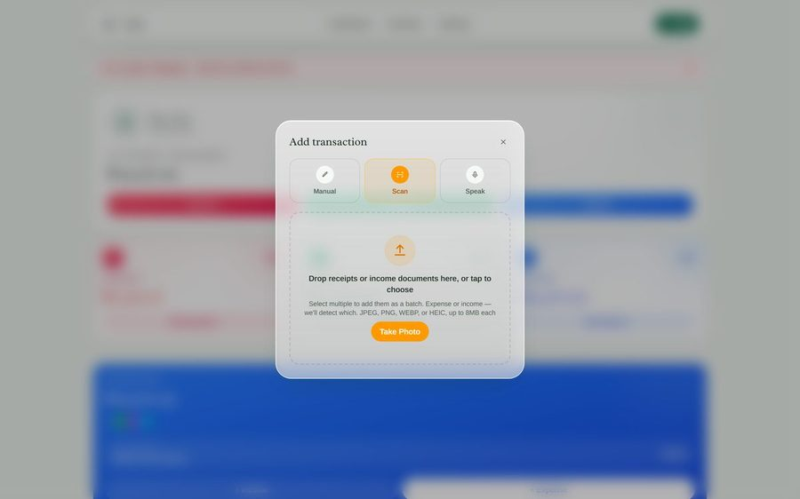
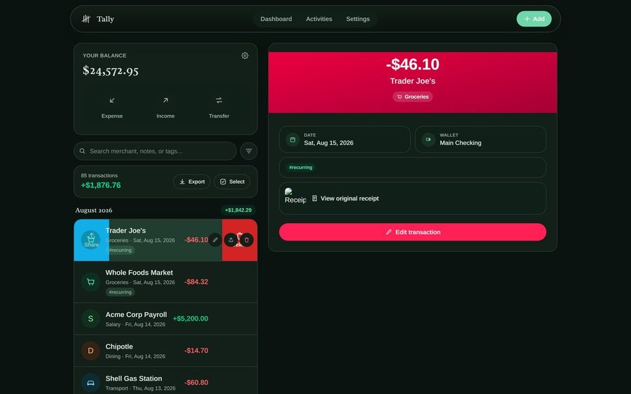
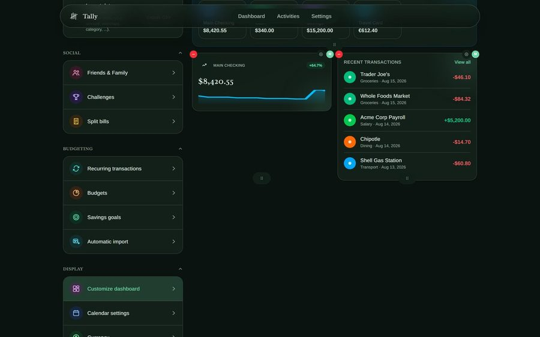

Project 01
Tally
Private personal finance, reimagined
Tally started as a receipt scanner and has grown into a full personal finance and digital wallet app: AI-powered expense tracking, payment cards and wallet passes, splitting bills with friends, a chat assistant that can answer questions about your own spending, and biometric app lock with encrypted backups to keep it all safe. Every account's data is fully isolated, so you can create one on the live instance in seconds with nothing to deploy, or self-host your own.
What it does
Money tracking
Log expenses and income manually, snap a photo of a receipt and let Google Gemini's vision API read the merchant, total, date, and category for you, or just talk — tap the mic, describe the transaction, and Tally transcribes and fills in the form. Set up an iOS Shortcut or Android share sheet and receipts can even import themselves from your photo library without opening the app. Money lives in wallets you can transfer between, each with its own currency; recurring rent, subscriptions, or salary log themselves on a schedule; budgets roll over month to month with an alert when a category nears its limit; savings goals track progress toward something you're saving for; and a debt/loan tracker keeps tabs on money lent or borrowed with an optional payoff schedule. Everything is searchable, filterable, and bulk-editable, with custom tags, categories you can rename, recolor, and re-icon, a dashboard you build yourself from 50+ widgets, and CSV or PDF export whenever you want the numbers elsewhere.
Digital wallet
A Wallet page brings money accounts, payment cards, and passes together in one Apple-Wallet-style stack. Payment cards keep card art and details for reference — only ever the last 4 digits, never a full card number. Passes cover generic cards, store cards, coupons, event tickets, boarding passes, gift cards, and transit passes, each with a visual editor, a pan/pinch-zoom crop tool for the logo and banner, and a gallery of premade designs you can pick from or submit your own to. A built-in generator and scanner covers QR, Code128, EAN-13, UPC-A, PDF417, and Aztec codes.
Friends & social
Add other Tally users as friends or family, then split a bill evenly or by custom amounts — either just tracking who paid what, or generating a shareable link anyone can view without an account. A single combined figure nets out everything you owe a friend across splits and loans, and Challenges let you run a savings race, spending limit, or no-spend-days contest together, competitive or collaborative.
Security, backup & offline
An app lock — a passcode, or biometric sign-in via Face ID, Touch ID, or Windows Hello — sits in front of the whole app, with a configurable inactivity timeout. A full backup can be exported and restored from a passphrase-protected file, encrypted client-side so the passphrase never reaches the server. Offline support keeps a sync queue running when you lose connection, so you can keep adding transactions, wallets, budgets, and everything else and catch up automatically once you're back online.
AI & tools
A chat-style spending assistant answers questions like "how much did I spend on food this month" from your real transaction data, with a lighter fallback model for when the primary one is rate-limited. A dedicated Tools section adds a currency converter and discount/tip/loan calculators, and the whole app — including sign-in and onboarding — is translated into 16 languages, with right-to-left layout for Arabic and Urdu.
Why I built it
Most expense trackers ask you to hand your spending data to a third party — a company with an incentive to sell insights about your habits, or at minimum a server you don't control. Tally is the opposite: it's open-source and built for privacy, with no analytics and no data sharing. Anyone can sign up with just a username and password — no email required — or sign in with GitHub if you'd rather skip picking a password, and every account's expenses, categories, and balance are fully isolated behind hashed passwords and signed, httpOnly session cookies, so no other account on the same deployment can ever see or touch your data. Every feature since — wallet passes, friends and splits, encrypted backups, biometric lock — has grown along that same line: it's built to be a personal tool, not a product with a business model behind it.
How it works
Tally is a Next.js (App Router) app written in TypeScript, styled with Tailwind CSS, and backed by Postgres — it deploys in one click to Vercel's free tier using a Neon database, and installs as an offline-capable PWA with a service-worker-backed sync queue for changes made while offline. Receipt scanning, voice transcription, and the spending assistant all run through Google's Gemini API, with a lighter fallback model kept in reserve for when the primary one is rate-limited, and every result surfaced for review before it's saved rather than written straight to the database. Automatic receipt import reuses that same pipeline, triggered by an iOS Shortcut or Android share sheet instead of the app itself. Biometric app lock runs on WebAuthn (Face ID, Touch ID, Windows Hello), encrypted backups are encrypted client-side before upload so the passphrase never reaches the server, and Resend sends password-reset and notification emails. When a detected amount is in a different currency than your default, Tally converts it automatically using live rates from the Frankfurter API. Every API route requires a valid session token, passwords are hashed with scrypt before storage, and sessions are signed with HMAC-SHA256 and expire after 30 days.
Try it yourself
You don't need to deploy anything — go to the live instance, create an account with just a username and password, and start tracking. It's free, takes a few seconds, and your data is completely private to your account; no one else, including other accounts on that deployment, can see it.
Screenshots






Hover the panels to bring each shot forward.
Tools
Good to know
Account recovery is fully self-service now — reset a forgotten password by email, delete your account, or sign out of every device at once, all from Settings. Automatic receipt import leans on iOS Shortcuts or Android's share sheet rather than the app quietly watching your photo library in the background, so it needs a one-time setup rather than being fully invisible. And if you deploy your own instance rather than using the live one, receipt scanning, voice entry, and auto-import need a free Gemini API key from Google AI Studio, password-reset and notification emails need a free Resend API key, and the app needs a Postgres database, which Vercel provides for free through Neon — manual entry and CSV export work without any of the optional keys.